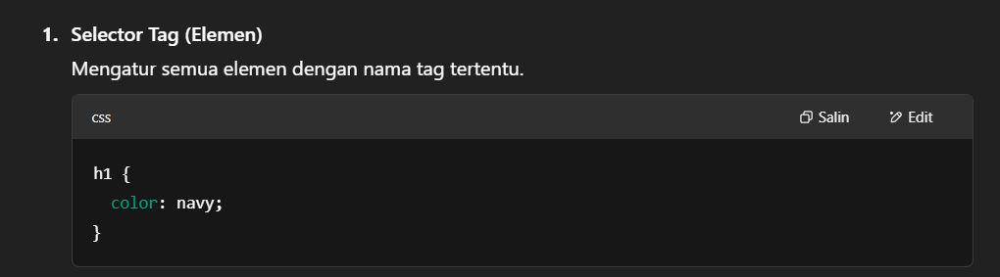
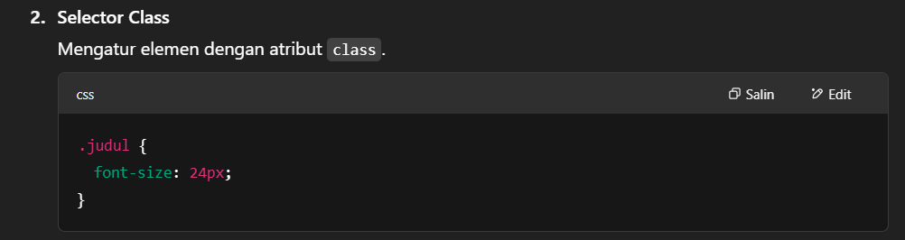
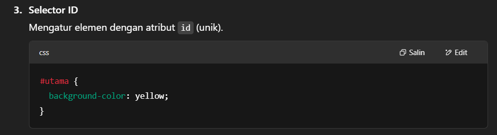
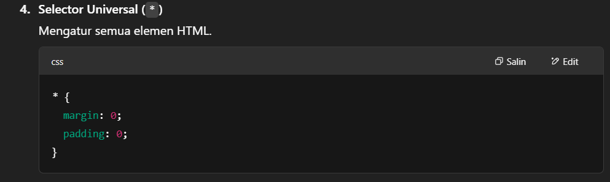
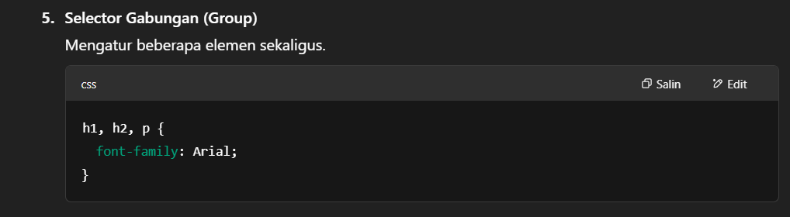

Nama: Yadi Limanta Maha
Kelas: TI - B23
NPM: 230840063
Apa itu Web, Bersite dan perbedaannya dengan Pemrograman Dekstop, Mobile serta Embedded Programming.
1. Web (singkatan dari World Wide Web) adalah sistem yang digunakan untuk mengakses informasi melalui internet menggunakan browser.
2. Website atau situs web adalah kumpulan halaman web yang saling terhubung, dikelola oleh individu atau organisasi, dan dapat diakses melalui internet menggunakan browser.
*perbedaan dengan pemrograman dekstop adalah Aplikasi dijalankan di komputer/laptop tanpa browser.
*perbedaan dengan pemrograman mobile adalah Digunakan untuk membuat aplikasi pada perangkat mobile (Android/iOS).
*perbedaan dengan Embedded programming adalah Digunakan untuk memprogram sistem tertanam (embedded system) seperti mikrokontroler, IoT, dll.
Untuk apa web browser dan web server?
1. Web browser adalah aplikasi yang digunakan oleh pengguna untuk mengakses dan menampilkan halaman web dari internet.
2. Web server adalah perangkat lunak yang menyimpan, memproses, dan mengirim halaman web ke browser saat diminta oleh pengguna.
Jelaskan proses pada client site programming dan server site programming!
*Client-side Programming:
1. User membuka halaman web di browser.
2. Browser mengirim permintaan ke server (request).
3. Server mengirim file HTML, CSS, dan JavaScript ke browser.
4. Kode dijalankan langsung di browser pengguna.
5. Interaksi seperti animasi, validasi form, dan manipulasi tampilan diproses di sisi client.
*Server-side Programming:
1. User membuka halaman web di browser.
2. Browser mengirim permintaan ke server (request).
3. Server menjalankan kode untuk memproses data, mengambil dari database, dll.
4. Server menghasilkan halaman atau data (biasanya HTML atau JSON).
5. Server mengirim hasilnya ke browser untuk ditampilkan ke user.
Jelaskan tentang HTML, CSS dan JavaScript!
*HTML untuk Struktur dasar halaman web.
*CSS untuk Mengatur tampilan dan gaya halaman web.
*JavaScript untuk Memberi interaktivitas dan logika pada halaman web.
Tuliskan 10 tag HTML beserta fungsinya!
*HTML untuk Menandai awal dan akhir dokumen HTML.
*tittle untuk Menentukan judul halaman (muncul di tab browser).
*h1 untuk Untuk membuat judul atau heading
*h2 untuk Untuk membuat judul atau heading
*h3 untuk Untuk membuat judul atau heading
*h4 untuk Untuk membuat judul atau heading
*h5 untuk Untuk membuat judul atau heading
*img untuk Menampilkan gambar di halaman web.
*table untuk kerangka tabel
*p untuk Menandai paragraf teks.
Tuliskan 10 properti CSS beserta fungsinya!
*color untuk Menentukan warna teks pada elemen.
*background color untuk Menentukan warna latar belakang elemen.
*font-size untuk Mengatur ukuran font teks.
*margin untuk Menentukan jarak antara elemen dengan elemen lain di sekitarnya (ruang luar).
*padding untuk Menentukan ruang antara konten elemen dengan batas elemen itu sendiri (ruang dalam).
*border untuk Menambahkan garis tepi di sekitar elemen.
*display untuk Menentukan bagaimana elemen ditampilkan dalam layout (misalnya, block, inline, flex).
*text-align untuk Menentukan perataan teks (misalnya, kiri, tengah, kanan).
*width untuk Menentukan lebar elemen.
*height untuk Menentukan tinggi elemen.
Jelaskan penerapan CSS dan bentuk selector yang dapat diterapkan!
*Penerapan CSS (Cascading Style Sheets) pada sebuah halaman web digunakan untuk mendesain dan mengatur tata letak elemen-elemen HTML agar lebih estetis dan mudah dibaca. CSS memisahkan konten (HTML) dan presentasi (desain), sehingga lebih mudah mengelola dan memperbarui desain tanpa mengubah struktur konten.





Tuliskan kode JavaScript untuk menguji sebuah bilangan apakah ganjil atau genap!
Klik tombol di bawah untuk menguji bilangan ganjil atau genap:
Tuliskan kode JavaScript untuk menghitung luas dan keliling dari persegi panjang!
Klik tombol di bawah untuk menghitung: